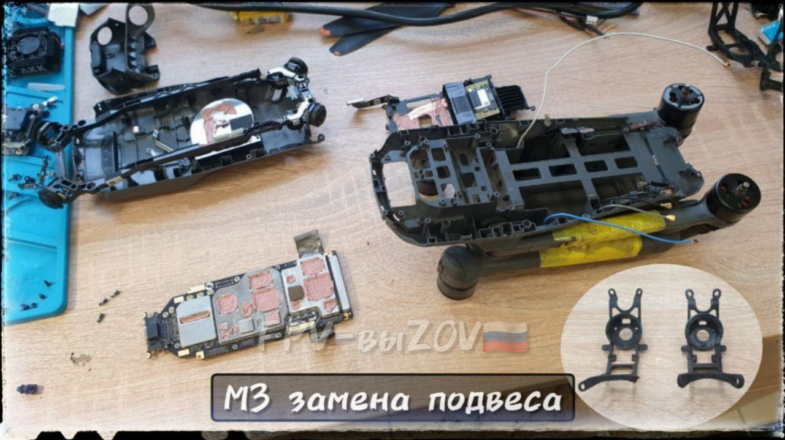
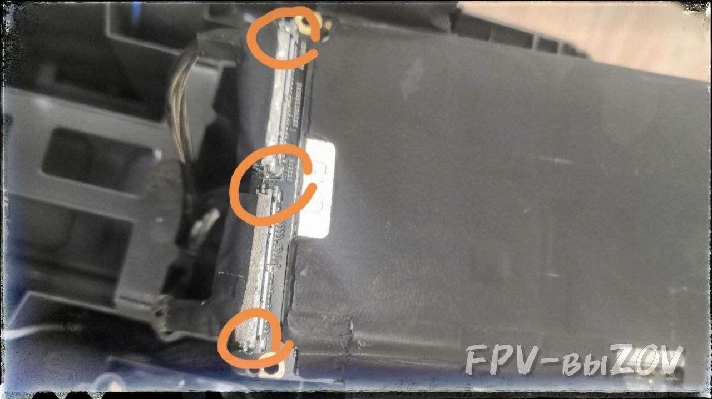
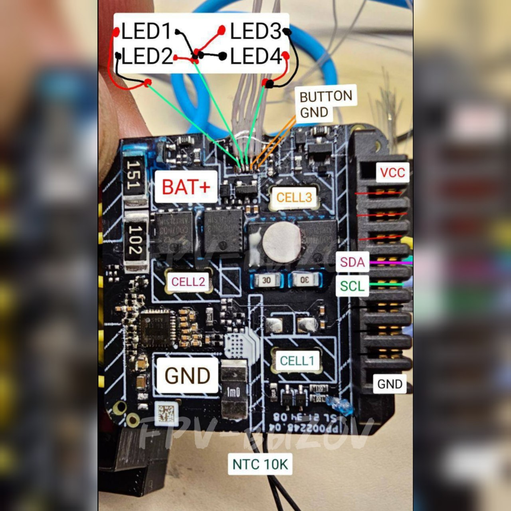
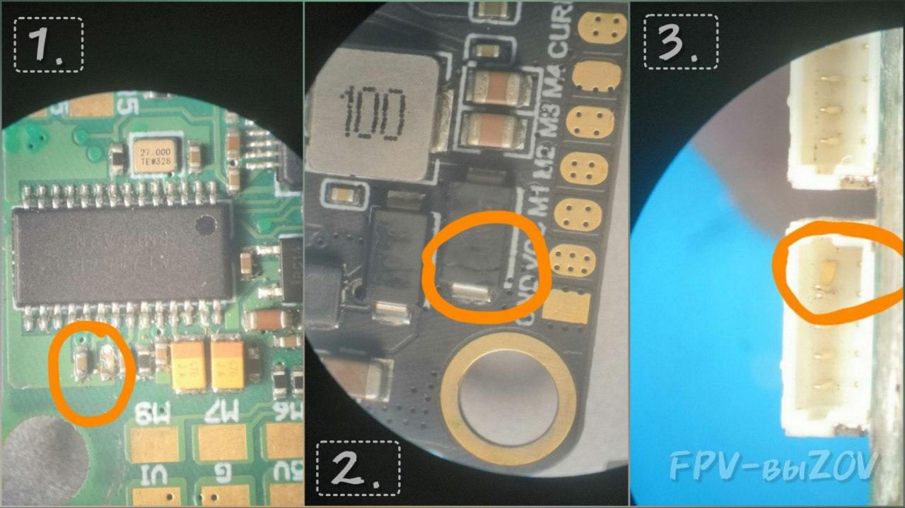
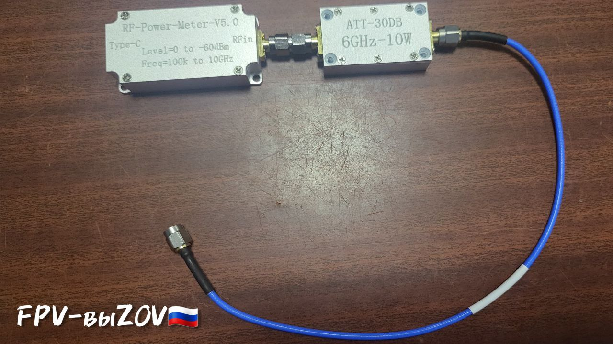

Ремонт крепления подвеса у М3
ℹ️ Было сломано крепление камеры, из-за чего камера не стабилизировалась и ее раскачивало.
📝 Для ремонта использовались 3 детали, распечатанные на 3Д-принтере:
-
.
➡️ Для замены пришлось разобрать почти весь дрон, сняли верхнюю крышку, плату GPS, плату (как на фото).
❗️ При разборке нужно соблюдать осторожность –
очень много тонких и маленьких шлейфов
, которые можно вырвать или порвать. ❗️Запоминайте или фотографируйте
откуда и какие винты выкручиваете
, иначе могут остаться лишние.
➡️ При сборке дрона рекомендуем проклеить края шлейфов подключения камеры к материнской плате,
.
По итогу ремонта было установлено новое крепление, и собран дрон🤙.
📎
Подвес готов – работает.
#РЕМОНТ_МАСТЕРСКАЯ
#Оператору_квадрокоптеров_DJI_AUTEL_FIMI
#DJI
#Техник_бпла
#ремонт_DJI
Это вложение из поста t.me/platforma_fpv/1114/1118

Лайфхак для М3
➡️ Чтобы шлейфы подключения камеры к материнской плате не вылетали при сборке* –
приклеить края шлейфов клеем-герметиком к материнской плате.
На фото обведены места куда наносится герметик.
📝 Приклеить = Проклеить = Зафиксировать.
ℹ️ Два шлейфа косички расположены на обратной стороне платы, в момент сборки дрона часто вылетают (по нашему опыту), потому что нет прижимной скобы. Если вылетел хоть один шлейф, то после сборки дрона не будет работать камера.
*Сборка М3 понадобится во время ремонта. Например,
#РЕМОНТ_МАСТЕРСКАЯ
#Оператору_квадрокоптеров_DJI_AUTEL_FIMI
#DJI
#Техник_бпла
#ремонт_DJI
Это вложение из поста t.me/platforma_fpv/1114/1119

FlexBV - программа для чтения электронных схем.
Для ремонта и диагностики дронов бренда DJI.
Оптимальный набор техника DJI: программа FlexBV и набор схем дронов DJI для этой программы:
- Программа связывает обзоры плат и схемы, избавляя от необходимости вручную делать перекрёстные ссылки. Это обеспечивает более плавный процесс ремонта и позволяет сосредоточиться на поиске неисправности.
- На схеме электронной платы можно узнать серийные номера комплектующих, увидеть распиновку, отследить соединения компонентов. Удобно при ремонте электронных схем, нет необходимости прозванивать (тестировать) каждую цепь, а сразу найти ее от поврежденного компонента.
ℹ️
Схемы представлены для следующих дронов:
DJI 4P IMU, DJI Mavic Air2, DJI Mavic Air2S, DJI Mavic Air3, DJI Mavic Pro, DJI Mavic2, DJI Mavic3, DJI Mavic3 Pro, DJI Mini1, DJI Mini2, DJI Mini3, DJI Mini3 Pro, DJI Mini4 Pro.
📎
#РЕМОНТ_МАСТЕРСКАЯ
#Оператору_квадрокоптеров_DJI_AUTEL_FIMI
#DJI
#Техник_бпла
#ремонт_DJI
#DJI4PIMU
#DJIMavicAir2
#DJIMavicAir2S
#DJIMavicAir3
#DJIMavicPro
#DJIMavic2
#DJIMavic3
#DJIMavic3Pro
#DJIMini1
#DJIMini2
#DJIMini3
#DJIMini3Pro
#DJIMini4Pro
Это вложение из поста t.me/platforma_fpv/1114/1283

Схема АКБ DJI Мавик 3.
Не умею отображать вложенные ссылки на топики
#РЕМОНТ_МАСТЕРСКАЯ
#Оператору_квадрокоптеров_DJI_AUTEL_FIMI
#DJI
#Техник_бпла
#ремонт_DJI
#АКБ
Это вложение из поста t.me/platforma_fpv/1114/1296

DJI Battery Killer
ℹ️ Программа для разблокировки АКБ DJI. Работает с Windows.
📝
Причины блокировки АКБ
:
- полный разряд;
- неправильное установка;
- перегрев АКБ;
- сбой прошивки или устаревшая прошивка дрона.
📎
.
📝 Инструкция:
"
⚠️ Для подключение АКБ к компьютеру Вам понадобится адаптер CP2112.
#программное_обеспечение
#для_windows
#техник_бпла
#ремонт
#DJI
#АКБ
Это вложение из поста t.me/platforma_fpv/16/1299

Диагностика дрона DJI Mavic 3: новый или восстановленный.
ℹ️ В последнее время часто встречаем «новые» DJI Mavic 3 в состоянии *из коробки*, в заводских пленках, наличие *заводских пломб* - однако это восстановленные квадрокоптеры.
➡️
Диагностика материнской платы
Аккуратно снимаем все экраны защиты, отмываем плату в ультразвуковой ванне, обращаем внимание на видеопроцессор: смотрим наличие компаунда.
Если компаунд был аккуратно удален по периметру — это явный признак того, что дрон восстановлен.
🔎 На фото:
- красной линией обведено место отсутствия компаунда (дрон после ремонта «реболл»);
- наличие компаунда (дрон не подвергался ремонту «реболл» ранее).
❕Удаленный компаунд говорит о том, что чип дрона подвергался перепайке («реболл»).
❔Реболл чипа — это процесс выпаивания, очистки и установки его обратно на материнскую плату.
📝 Какие могут быть проблемы DJI Mavic 3 после ремонта «реболл»
Главная проблема - частичная или полная не ремонтопригодность, опасность процедуры для других элементов материнской платы. «Реболл» не может починить неисправный чип, а лишь временно вернёт ему работоспособность.
✍️ Резюмируем
Все дроны или иное оборудование после ремонта методом «реболл», говорит о серьёзных проблемах дрона в прошлом.
Такой дрон или оборудование скорее всего не долговечное, гарантии работоспособности на продолжительное время нет, единственное что может мотивировать купить такой дрон - это низкая стоимость (если она такова).
#Оператору_квадрокоптеров_DJI_AUTEL_FIMI
#DJI
#РЕМОНТ_МАСТЕРСКАЯ
#Техник_бпла
#ремонт_DJI
#DJI
Это вложение из поста t.me/platforma_fpv/1114/1315
Небольшой таймлапс с пайкой доп. аккумулятора Lion 21700 5s1p.
ℹ️ Используем аппарат точечной сварки, паяльник и кастомный балансировочный кабель.
➡️ Подойдёт как доп. АКБ для Mavic'ов 3 серии, так и для любых других задач.
📎
#РЕМОНТ_МАСТЕРСКАЯ
#Оператору_квадрокоптеров_DJI_AUTEL_FIMI
#DJI
#Техник_бпла
#АКБ
Это вложение из поста t.me/platforma_fpv/1114/1143
Схема АКБ DJI Мавик 3.
Не умею отображать вложенные ссылки на топики
#РЕМОНТ_МАСТЕРСКАЯ
#Оператору_квадрокоптеров_DJI_AUTEL_FIMI
#DJI
#Техник_бпла
#ремонт_DJI
#АКБ
Это вложение из поста t.me/platforma_fpv/1114/1296
DJI Battery Killer
ℹ️ Программа для разблокировки АКБ DJI. Работает с Windows.
📝
Причины блокировки АКБ
:
- полный разряд;
- неправильное установка;
- перегрев АКБ;
- сбой прошивки или устаревшая прошивка дрона.
📎
.
📝 Инструкция:
"
⚠️ Для подключение АКБ к компьютеру Вам понадобится адаптер CP2112.
#программное_обеспечение
#для_windows
#техник_бпла
#ремонт
#DJI
#АКБ
Это вложение из поста t.me/platforma_fpv/16/1299

Ремонт комплектующих для FPV дронов, примеры проблем в лупу микроскопа.
(причина того, что в очках нет OSD).
Проблему решает замена smd конденсаторов.
2.
, в данном случае "звенел" в обе стороны.
Если стоит в паре, как на фото, лучше поменять второй. Берем с донора один в один или новый, по маркировке.
3.
- еще одна частая проблема поломок комплектующих FPV дрона.
Встречается на разъёмах: полетного контроллера, регулятора, видеопередатчика.
Проблему решает размыкание и выравнивание контактов пинцетом.
⚠️ Микроскоп оптический (не электронный!) необходим. Визуальный осмотр - очень важная вещь.
#РЕМОНТ_МАСТЕРСКАЯ
#Техник_бпла
#Ремонт_комплектующих_для_fpv
#FPV
#техник_fpv
Это вложение из поста t.me/platforma_fpv/1114/1146
Настройка механического переключения (с помощью сервопривода) видеоканалов на видеопередатчике 1,2 ГГц с пульта.
- Три провода от сервопривода паяем на полетник (
led - желтый, ground - черный, 5v - красный
).
- Подключаем дрон к компьютеру.
- В Betaflight Configurator, в разделе «Конфигурация» ставим галочки led_strip и servo_tilt (если таких галочек нет, надо перепрошить полетник с добавлением функции “Servos”).
- В командной строке пишем:
resource (тут смотрим какое значение стоит в строке “resource led_strip 1 XX” - где ХХ это ваше значение, запоминает ХХ)
resource led_strip 1 none
resource servo 1 XX (где ХХ - это ваше значение)
save
- Во вкладке «Сервоприводы» ставим на серво 1 нужный вам AUX (рекомендуем ставить на кнопку) галочку (например: для пульта RadioMaster TX12 кнопки – это AUX 5 и 6).
- Подключаем к дрону АКБ, если все сделано правильно серва дернется, и после коннекта с приемником можно по назначенной ранее кнопке двигать сервопривод.
⚠️ Сервы на 360 градусов не подходят.
- Нажимаем кнопку, выключаем дрон, серва остается в положении активной кнопки, подгоняем колено сервопривода под кнопку переключения каналов на видеопередатчике, фиксирует любым удобным вам способом и проверяем на работоспособность.
#РЕМОНТ_МАСТЕРСКАЯ
#FPV
#техник_fpv
#Механическая_настройка_для_fpv
#видео_fpv
Это вложение из поста t.me/platforma_fpv/1114/1150

RF-Power-Meter-V5.0
устройство для измерения мощности любого передающего устройства.
Например, для измерения мощности модуля передатчика.
*который устанавливается в пульт.
RF-Power-Meter-V5.0 подходит для измерения мощности любого устройства.
‼️Не всегда мощность, заявленная производителем, соответствует действительности.
Для полевой мастерской - данный девайс не обязателен.
Для Команды профессионалов - рекомендуем обзавестись.
#РЕМОНТ_МАСТЕРСКАЯ
#ДИАГНОСТИКА
#Техник_бпла
#Инструменты
Это вложение из поста t.me/platforma_fpv/1114/1562
#РЕМОНТ_ДИАГНОСТИКА
#DJI
, для ремонта и диагностики дронов бренда DJI;
-
- программа для разблокировки АКБ DJI;
-
: - новый или восстановленный.
#АКБ
- программа для разблокировки АКБ DJI.
#Ремонт_комплектующих_для_fpv
#Механическая_настройка_для_fpv
#Инструменты
устройство для измерения мощности любого передающего устройства.
Веб-страница создана автоматически на основе поста пользователя ПЛАТФОРМА_FPV